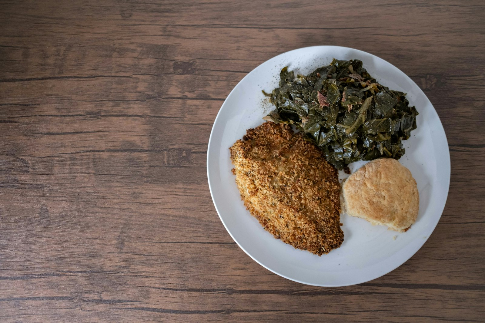

Home / Menu
The steam table, written downToday's menu
Pick one meat, then three or four vegetables. The line changes daily, and everything is cooked the morning you eat it. Prices are posted at the counter.
Home / Menu
The steam table, written downPick one meat, then three or four vegetables. The line changes daily, and everything is cooked the morning you eat it. Prices are posted at the counter.

One meat, three sidesMenu items rotate daily and seasonally. Call ahead if you're driving in for something specific.